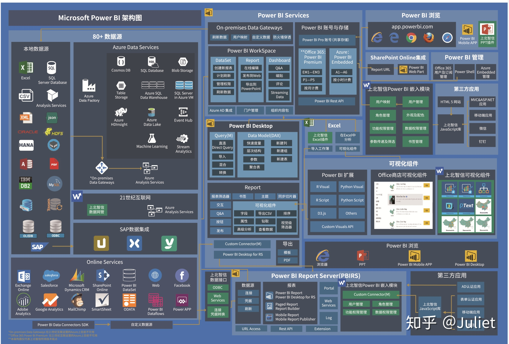

谈到商业智能（BI）分析软件时，两个主要的行业领导者：
Power BI 和 Tableau。
为什么要使用 Power BI ？
有哪些角色 ？你是谁 ？
如何获得PowerBI ？
如何在 PowerBI 中使用数据 ？
为什么要使用 Power BI ？
有哪些角色 ？你是谁
客户、老板
数据分析师、咨询师、产品设计
DBA，前后端开发和运维
简单演示
PowerBI 架构图
下一次培训相关内容